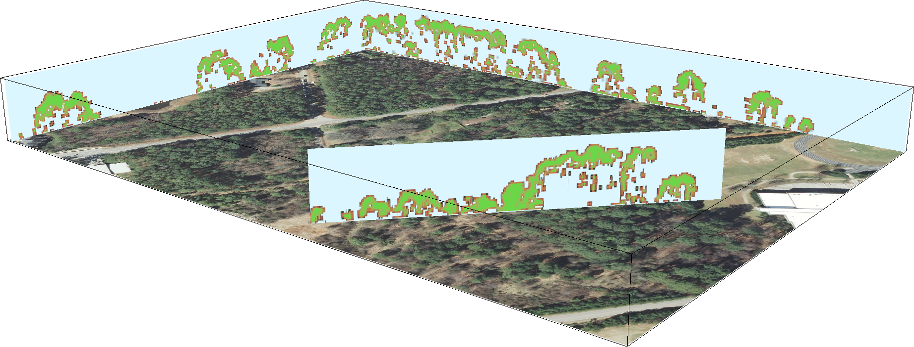

3D rasters are powerful
and you already know how to use them
Vaclav (Vashek) Petras,
Anna Petrasova and Helena Mitasova
US-IALE, Baltimore
April 9-13, 2017
3D rasters
Usage:
soil properties,
concentrations in water bodies,
properties of air mass,
hyperspectral data,
analysis of spatio-temporal data,
forest and habitat properties,
exploration of simulation scenario space,
etc.
- 3D raster - Voxel space - 3D voxel grid - Voxel model
- [3D] cell - Voxel - 3D voxel unit - Volumetric pixel

Image credit:
GRASS Development Team
Series of 2D rasters
- 2D does not explicitly represent and model 3D relationships
- 2D rasters accessible individually
3D raster
- explicit 3D relationships
- unified access to all 3 dimensions
- needs to be sliced to get 2D rasters
Third dimension
- The first two dimensions are the same as in 2D.
- Third dimension can be in space, time, or scenario space.
- Mind the possible anisotropy in the Z direction.
(different from 2D rasters where all directions are isotropic most of the time)
Working with 3D rasters
Not that different from 2D rasters, images, and matrices
Python
x = array([[[ 0, 1, 2],
[ 3, 4, 5],
[ 6, 7, 8]],
[[ 9, 10, 11],
[12, 13, 14],
[15, 16, 17]],
[[18, 19, 20],
[21, 22, 23],
[24, 25, 26]]])
x.sum(axis=0)
# array([[27, 30, 33],
# [36, 39, 42],
# [45, 48, 51]])

R
x = array(1:40, dim=c(2,4,5))
# , , 1
#
# [,1] [,2] [,3] [,4]
# [1,] 1 3 5 7
# [2,] 2 4 6 8
#
# , , 2
# ...
x[2,3,3]
# 22
x[2,3,3] = 0

Octave
x = reshape(1:8, 2, 2, 2)
a(2,1,1) = 5
b = 3 * a
# b =
#
# ans(:,:,1) =
#
# 3 9
# 15 12

GRASS GIS
general-purpose geospatial analysis and remote sensing tool
-
data types:
- vectors
- 2D rasters
- 3D rasters
-
container types:
- imagery groups
- spatio-temporal datasets
- series of 2D rasters
(or vectors or 3D rasters)

Moving window
2D
r.neighbors input=a output=b method=average size=5
r.colors map=b color=viridis
3D
r3.neighbors input=a output=b method=average window=5,5,5
r3.colors map=b color=viridis
3D raster algebra
Addition
b = a + 2
Conditional expression
b = if(a > 20, 1, null())
Accessing neighboring cells
b = (a[0,0,-1] + a[0,0,1]) / 2
Visual programming
- graphical modeler
- graphical raster calculator

Example: Terrain evolution

Example: Behavioral patterns
presence of people over time in camera view
Petrasova A., Hipp, A.J., Mitasova, H.,
Using space-time cube for visualization and analysis of active
transportation patterns derived from public webcams.
ICC 2017, Washington DC 2-7th July
Example: Behavioral patterns
spatio-temporal data representing movement of people in urban environment

Petrasova A., Hipp, A.J., Mitasova, H.,
Using space-time cube for visualization and analysis of active
transportation patterns derived from public webcams.
ICC 2017, Washington DC 2-7th July
Example: Vegetation structure
3D vegetation structure derived from lidar point clouds
Petras, V., D. J. Newcomb, and H. Mitasova.
Generalized 3D fragmentation index derived from lidar point clouds.
In: Open Geospatial Data, Software and Standards [in print]

3D version of forest fragmentation index by Riitters et al.
3D index of 3D raster

Petras et al. 2017 [in print]
Point cloud

Petras et al. 2017 [in print]
Binning, moving window & raster algebra
# Bash
r3.in.lidar input=points.las n=count base_raster=ground -d class_filter=3,4,5
r3.neighbors input=count output=average method=average window=3,3,3
r3.mapcalc expression="buffer = if(average > 0, 1, 0)"


Petras et al. 2017 [in print]
Fragmentation index
# Python
import grass.script as gs
gs.run_command("g.extension", extension="r3.forestfrag")
gs.run_command("r3.forestfrag", input="buffer", output="fragmentation")


Petras et al. 2017 [in print]
Profile of 3D raster

Petras et al. 2017 [in print]
Back to 2D
# Bash
g.extension r3.count.categories
r3.count.categories input=fragmentation output=count
g.list type=raster pattern="count_*"

Petras et al. 2017 [in print]